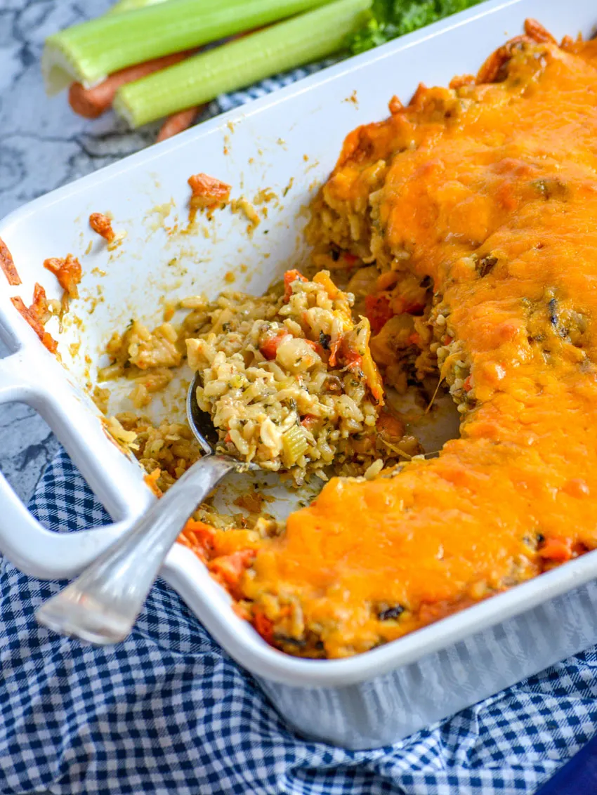

Home
Wild Rice Chicken

Wild Rice Chicken casserole has been a Butler Family dinner favorite for years. Here's how to make it:
Ingredients
- 8 boneless, skinless, chicken breast tenderloins
- 1 box Ben's Original long grain and wild rice
- 1 can cream of mushroom soup
- 1 cup sour cream
- 1 cup shredded cheddar
Directions
- Preheat the oven to 350 degrees Fahrenheit.
- Begin cooking the rice in a rice cooker so it will be ready when the rest of the ingredients are being mixed.
- Boil the chicken and chop into small pieces.
- In a large mixing bowl, combine the chicken, sour cream, cream of mushroom soup, and wild rice. Mix well.
- Grease an 8"x8" casserole dish and fill with the casserole mixture.
- Bake for 30 minutes, then remove from oven.
- Spread the shredded cheddar on top, and bake for another 5-7 minutes, or until the cheese has melted.
- Enjoy!